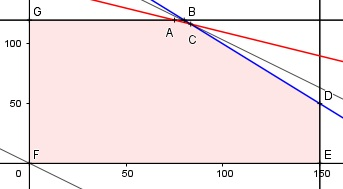

Aufgabe 80 Eine Firma stellt zwei Geräte G1 und G2 her und kann monatlich 150 G1 und 120 G2 montieren. Ein Zulieferer versorgt die Firma mit maximal 200 Gehäusen pro Monat. Für die Elektronik braucht sie zum Einbau 2h für G1 und 5 h für G2 bei monatlich maximal 750 Arbeitsstunden. G1 liefert 280 €, G2 350 € Gewinn. Wie hoch ist der maximale Gewinn? x = Anzahl G1 y = Anzahl G2 Bedingungen: x > 0 x ∈ ℕ y > 0 y ∈ ℕ x ≤ 150 y ≤ 120 x + y ≤ 200 2x + 5y ≤ 750 Zielfunktion: G = 280x + 350y Randgerade 1: y = 120 Randgerade 2: 2x + 5y = 750 Randgerade 3: x + y = 200 Randgerade 4: x = 150

Die Eckpunkte G, A, C, D, E und F bilden das Planungsgebiet, das alle Ungleichungen erfüllt. Eckpunkt A ist der Schnittpunkt der Randgeraden 1 und 2 y = 120 Eingesetzt: 2x + 5 * 120 = 750 |-600 2x = 150 |:2 x = 75 A(75|120). B ist der Schnittpunkt der Randgeraden 1 und 3 y = 120 Eingesetzt: x + 120 = 200 |-120 x = 80 B(80|120) liegt nicht im Planungsgebiet 2 * 80 + 5 * 120 = 760 ≠ 750 C ist der Schnittpunkt der Randgeraden 2 und 3 x + y = 200 |-y x = 200 - y Eingesetzt: 2 * (200 - y) + 5y = 750 400 - 2y + 5y = 750 |-400 3y = 350 |:3 y = 116,67 x = 200 - 116,67 x = 83,33 C(83,33|116,67) ∉ ℕ ist Eckpunkt ganzzahlig gewählt (83|116) D ist der Schnittpunkt der Randgeraden 3 und 4 x = 150 Eingesetzt: 150 + y = 200 |-150 y = 50 D(150|50) ist Eckpunkt E, F und G sind Eckpunkte Die Parallele der Zielfunktion G liegt in C am höchsten --> Gmax = 83 * 280 + 116 * 350 = 63 840 €